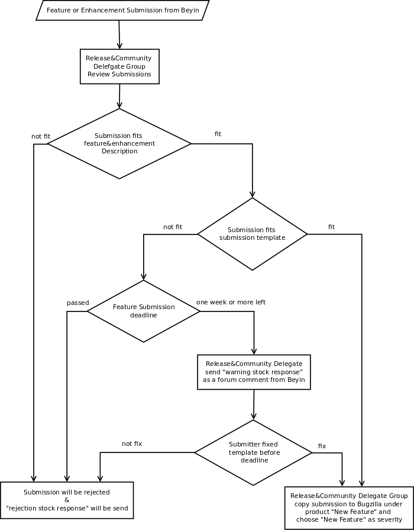
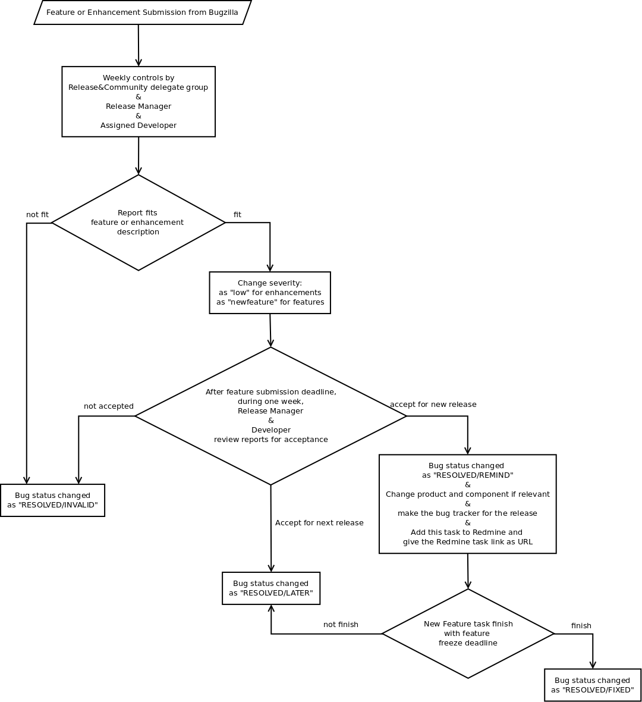

- New Feature Requests
- What is an Enhancement?
- What is a Feature?
- New Feature Request Process
New Feature Requests¶
What is an Enhancement?¶
An enhancement can be expressed as an improvement suggested in order to use a feature more effectively and agreeably.
What is a Feature?¶
A feature can be expressed as a significant change or enhancement for the new release of Pardus.
A feature can be formalize with the following notions:
- For sofware that Pardus developers lead:
- a significant usability change.(Excluding theme and style changes)
- a highly necesssary user requirement
- For upstream software:
- Be in contact with the upstream developer and request for new feature or change
- Working with the upstream developer about a specific feature.
It should be clear enough that if not completed properly or without a proper backup plan could delay the release
It should be important enough to put as a task in release notes.
It should be exist a group of people that consider this feature as a necessity.
- It should not impose a burden to user:
For example the change should not effect a configuration file in the system and enforce the user to change it manually after updates.
Do not confuse new package requests with new feature requests.
Update request of a package can not be a feature request.
New Feature Request Process¶
You can make new feature request any time you want.
How do I propose a new feature that I do not contribute?¶
There is two way to do this:
Via Bugzilla:¶
Have an account on http://bugs.pardus.org.tr
Click “File a New Bug” button on bugs.pardus.org.tr
Choose the product that you want to request the new feature.
- A report interface will exist:
The “Summary” part should include a title like “New feature X”. (X is the new feature that you want.)
- In “Details” part you should give the answers of the following questions:
- Summary: Explain shortly the feature
- Description: Explain the feature in detail and explicitly.
- Contribution to Pardus: Explain the aim of this feature and benefits in terms of Pardus project.
Choose “NewFeature” for the severtiy part.
Via For Freedom / Brain:¶
Have an account on http://www.ozgurlukicin.com/yenifikir/
Click “Add a new idea” button.
“Title” part should include a title like “New feature X”. (X is the new feature that you want.)
- In “Details” part you should give the answers of the following questions:
- Summary: Explain shortly the feature
- Description: Explain the feature in detail and explicitly.
- Contribution to Pardus: Explain the aim of this feature and benefits in terms of Pardus project.
In “Category” part you should choose the product that you want to add the new feature.
“About this package” part is about feature request for packages that come from upstream.
If the new feature is mentioned in a forum please add the link at “Forum Link” part.
If new feature has a bug report please add the bug numbers at “Bug Numbers” part.
If you think that the new feature is about more than one product, you can use “Tickets” part.
How I can propose a new feature that I want to contribute?¶
- You can propose new features that you want to contribute using Via Bugzilla: steps.
- If you have already done some implementations about the related project you can add it as an patch attachment.
How can I cancel proposed feature?¶
- If you report your new feature Via Bugzilla:, you can cancel your feature with selecting status of the report as “RESOLVED/INVALID”.
How my new feature request is accepted?¶
New Feature Requirements¶
- The licence of the new feature request should be suitable for Pardus. (see Licensing Guidelines)
- It should be accepted as a new feature for the new version of Pardus.
- It should be rerported before the new feature submission deadline.
Process¶
New feature requests should be reported from http://bugs.pardus.org.tr or http://www.ozgurlukicin.com/yenifikir/. bkz. How do I propose a new feature that I do not contribute?
New feature requests are reviewed by Release and Community Delegate group.
- There exists a new feature submission deadline. That deadline is stated by release manager and one and two week before the deadline, the release manager sends warning messages from community communication ways.
- After the deadline Release and Community Delegate group start to review new feature requests as stated above:
a. New Features reported from For Freedom -> Brain:¶

If the report is not suitable for What is a Feature? description, the “new feature rejection response” send as a forum comment by Release and Community Delegate group.
- If the report is not suitable for the new feature template and unclearly expressed, Release and Community Delegate group send a “retrification warning response” as a forum comment.
- If the corection can not been done in due time, the “new feature rejection response” send as a forum comment by Release and Community Delegate group.
- If the corection can done in due time, the following steps will occur:
- If the request is suitable for What is a Feature? description, and reported completely and clearly, Release and Community Delegate group;
- open a new bug report under “Distribution Process -> New Feature” product at http://bugs.pardus.org.tr
- choose “newfeature” as the severity of the bug
- copy the details of the report to For Freedom -> Brain forum as a comment.
- open new bugs for each new feature, if the report has multiple new feature request.
b. New Feature reported from Bugzilla:¶

The requests is came from bugzilla can be reviewed by release managger, assigned developer or Release and Community Delegate group. Some bugs reported by user may have a new feature or enhancement nature, but users generally let the severity part as “Normal”. The aim is to review these type of bugs regularly and change their severity as needed.
- This feature review can be done once a week. If the report is suitable for What is a Feature? description, and reported completely and clearly, their severities can be changed as “low” for enhancements and “newfeature” for new features.
- If the report is not very clear and not suitable for What is a Feature? description, the report status is marked with “RESOLVED/INVALID”.
Acceptance of New Feature Request¶
There exist a deadline for the new feature submission of new Pardus Release. After that date, all “newfeature” and “low” severity bugs reviewed by release maanger and assigned developer during one week. The aim of this review is to decide whether the feature is accepted for new Pardus Release.
- Review “low” and “newfeature” severity bugs by release manager and assigned developer.
If the new feature request is not suitable for What is a Feature? description, the report status is marked with “RESOLVED/INVALID”.
If this new feature can not be done for this new release but may be done for the next new release, the report status is marked with “RESOLVED/LATER”.
- If this new feaure is suitable for What is a Feature? description, and can be accepted for this new release:
- The report status is marked with “RESOLVED/REMIND”
- If necessary the product and component can be changed.
- The bug report is marked as the tracker bug of the related release.
- When the bug is became a task in the project maangement tool, it will be given in the URL part of the bug report.
- The implementations committed via SVN should be appropriate in order to enable users to follow changes via bugzilla and project maangement tool.
Accomplishment of New Feature¶
There exist a deadline for the accomplishment of the new feature (feature freeze time).
- If the developer can not be finish the work in due time, the status of the bug report is marked as “RESOLVED/LATER” and the new feature is left to next release.
- If the developer can finish the work in time, the bug status is marked as “RESOLVED/FIXED” via SVN commits of the developer.
How I can follow the new feature progress?¶
If the bug status is marked as:
“RESOLVED/INVALID”, your new feature request is unfortunately not accepted.
“RESOLVED/LATER”, your new feature request is left to next release.
- “RESOLVED/REMIND”, your new feature request is accepted as a new feature of this new release.
- The implementation progress is reflected to comments as SVN commits.
- The implementation can also be followed via related task of the project management tool URL given in the bug report.
- When the new feauture is accomplished, the bug status is marked as “RESOLVED/FIXED”.
Why this process is important and why should I care?¶
The new feature requests is the improvements not only for Pardus but also for the whole world. The interaction between the user and the developer (the feedback and suggestions) is a big opportunity in order to evaluate and improve Pardus.
This kind of process for new features, is very important for following the status and timelines of new features. Before the execution of this process, some undecided new features was wanted to added in last second of the new release and it caused to extend the deadline of the release.
Pardus Linux Distiribution intend to use a predictable release schedule. Related to this, the new feature policy has also a timeline. Periodically reviewed of new features is increase the predictability of the release schedule.
Defined Features has many advantages:
- The reported features from bugzilla can be followed simply and enable everyone in order give suggestions, comments and feedback.
- The volunteers can simply deal with these features.
- Testers can get some idea from the report status and can build up experience and knowledge about the feature area.
- It creates an excitement what’s being worked on.
- It avoids suprises at the end.
- It says what we are going to do.
- It simplyfies to create release notes, all have to do is to filter bugs with “RESOLVED/FIXED” status and “newfeature” severity.
- Media and press can benefit also from these reports.